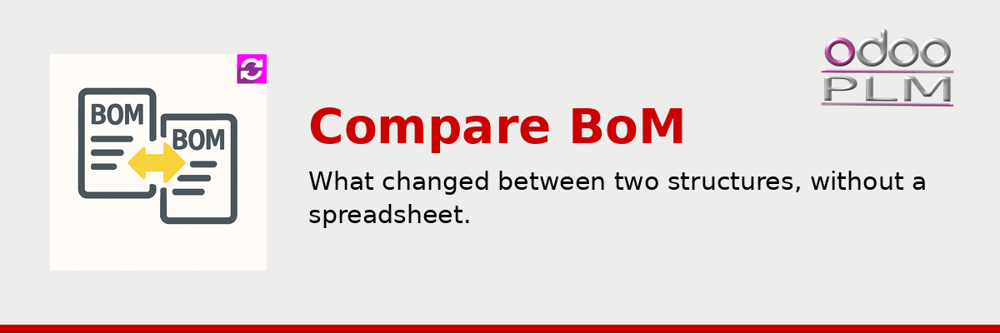
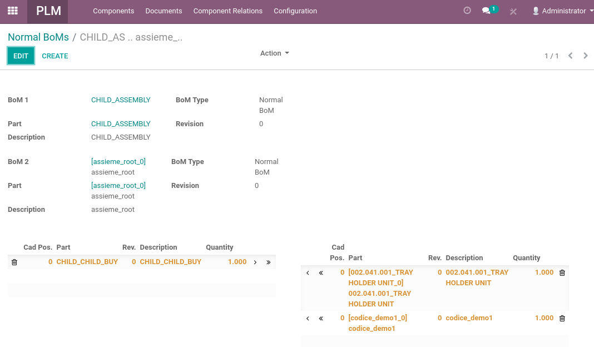

<!-- The Apps store rewrites every <a> of a module description into a <span>, so a
     link here looks clickable and does nothing: addresses are printed as text.
     Inline styles, the bootstrap grid and the oe_ classes survive. The palette is
     the company one: #CC0000 for the accents, #000000 for the outlines. -->
<div class="container">
    <div class="oe_styling_v8">
        <div class="container p-3 mb-3">
            <div class="container pt-0 px-4 pb-5">
                <div class="row">
                    <div class="col-12">
                        
                    </div>
                </div>

<div class="row">
                    <div class="col-12 px-4">
                        <h2 class="font-weight-bold"
                            style="font-family:'Montserrat', sans-serif !important; font-size:2rem; color:#CC0000">
                            Overview
                        </h2>
                        <hr style="border: 2px solid #000000 !important; background-color: #000000 !important; width: 50px !important; margin-left: 0 !important; margin-top: 8px;">
                        <h3 class="oe_slogan" style="text-align:left; color:#000000">
                            What changed between two structures, without a spreadsheet.
                        </h3>
                    </div>
                </div>

                <div class="row">
                    <div class="col-12 px-4">
                        <p style="font-size:18px; text-align:justify">
                            Two bills of material are never far apart until the day they are. The
                            revision that went to the supplier and the one production is building. The
                            engineering structure and the manufacturing one derived from it. The BOM
                            of the machine you sold in March and the one of the machine you are
                            shipping now. When something does not fit on the assembly line, the
                            question is always the same: what is different?
                        </p>
                        <p style="font-size:18px; text-align:justify">
                            The usual answer is two exports, a spreadsheet and an afternoon of
                            scrolling, which finds most of the differences most of the time. This
                            module answers it on screen, in one operation, and lets you act on what it
                            found.
                        </p>
                    </div>
                </div>

                <div class="row" style="margin-top:2rem">
                    <div class="col-12 px-4">
                        <h2 class="font-weight-bold"
                            style="font-family:'Montserrat', sans-serif !important; font-size:2rem; color:#CC0000">
                            What it does
                        </h2>
                        <hr style="border: 2px solid #000000 !important; background-color: #000000 !important; width: 50px !important; margin-left: 0 !important; margin-top: 8px;">
                    </div>
                </div>
                <div class="row">
                    <div class="col-6 px-4">
                        <h3 class="oe_slogan" style="color:#000000; text-align:left; font-size:1.3rem">Two structures, side by side</h3>
                        <p style="font-size:18px; text-align:justify">
                            Pick any two bills of material and see them next to each other, with the
                            part number, the description, the position and the quantity of each line,
                            and the revision each one belongs to.
                        </p>
                        <h3 class="oe_slogan" style="color:#000000; text-align:left; font-size:1.3rem">The differences are classified</h3>
                        <p style="font-size:18px; text-align:justify">
                            Every difference is named for what it is: a line present on one side only,
                            a line that exists on both with a different quantity, a line whose data
                            changed. You read the outcome, not two lists.
                        </p>
                    </div>
                    <div class="col-6 px-4">
                        <h3 class="oe_slogan" style="color:#000000; text-align:left; font-size:1.3rem">Compare the way you work</h3>
                        <p style="font-size:18px; text-align:justify">
                            The comparison can key on the position and the quantity, or on the
                            component alone, because a structure where positions are meaningful is not
                            read like one where only the parts matter.
                        </p>
                        <h3 class="oe_slogan" style="color:#000000; text-align:left; font-size:1.3rem">Act on what you found</h3>
                        <p style="font-size:18px; text-align:justify">
                            A missing line can be copied or moved to the other side, an extra one
                            removed, and the target structure updated. The comparison becomes the
                            alignment, instead of a report somebody has to apply by hand.
                        </p>
                    </div>
                </div>

                <div class="row" style="margin-top:10px">
                    <div class="col-12 px-4">
                        <div style="max-width:520px; margin:0 0 26px 10%">
                            
                            <p style="font-size:15px; text-align:left; color:#000000; margin-top:8px">
                                The two structures with their type, part and revision, and underneath the
                            two lists of differences. The arrows on each line move it to the other
                            side: this screen is where the alignment is done.
                            </p>
                        </div>
                    </div>
                </div>

                <div class="row" style="margin-top:2rem">
                    <div class="col-12 px-4">
                        <ul style="padding-left:0; list-style-type:none; margin:0">
                            <li style="font-size:18px; color:#000000; margin:12px 0">
                                <span style="color:#CC0000; font-weight:700">&#9642;</span>&nbsp;&nbsp;Any two BOMs compared, whatever their type
                            </li>
                            <li style="font-size:18px; color:#000000; margin:12px 0">
                                <span style="color:#CC0000; font-weight:700">&#9642;</span>&nbsp;&nbsp;Differences classified: added, missing, quantity changed
                            </li>
                            <li style="font-size:18px; color:#000000; margin:12px 0">
                                <span style="color:#CC0000; font-weight:700">&#9642;</span>&nbsp;&nbsp;Comparison by position and quantity, or by component
                            </li>
                            <li style="font-size:18px; color:#000000; margin:12px 0">
                                <span style="color:#CC0000; font-weight:700">&#9642;</span>&nbsp;&nbsp;Lines moved between the two structures to align them
                            </li>
                        </ul>
                    </div>
                </div>

                <div class="row" style="margin-top:2rem">
                    <div class="col-12 px-4">
                        <p style="font-size:18px; text-align:justify">
                            Part of <b>OdooPLM</b>, the Product Lifecycle Management suite by
                            OmniaSolutions. It requires the <b>plm</b> module, and it is released
                            under AGPL-3.
                        </p>
                    </div>
                </div>

                <div class="oe_centeralign" style="margin-top:24px">
                    <div class="oe_spaced" style="display:inline-block; min-width:300px; margin:10px 12px; padding:14px 22px; border:2px solid #000000; border-radius:10px; text-align:center; vertical-align:top">
                        <span style="font-size:15px; color:#000000">Try the whole suite with Docker</span><br/>
                        <b style="font-size:17px; color:#CC0000">github.com/OmniaGit/DockerOdooPLM</b>
                    </div>
                    <div class="oe_spaced" style="display:inline-block; min-width:300px; margin:10px 12px; padding:14px 22px; border:2px solid #000000; border-radius:10px; text-align:center; vertical-align:top">
                        <span style="font-size:15px; color:#000000">Website</span><br/>
                        <b style="font-size:17px; color:#CC0000">odooplm.omniasolutions.website</b>
                    </div>
                    <div class="oe_spaced" style="display:inline-block; min-width:300px; margin:10px 12px; padding:14px 22px; border:2px solid #000000; border-radius:10px; text-align:center; vertical-align:top">
                        <span style="font-size:15px; color:#000000">Contact us</span><br/>
                        <b style="font-size:17px; color:#CC0000">www.omniasolutions.website/#contact</b>
                    </div>
                </div>

            </div>
        </div>
    </div>
</div>
